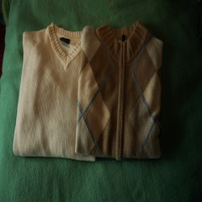

Lana merino en beige
Un diseño sobrio de cuello en V.
Esta categoría estaba presente en el proyecto original. En la versión modernizada se conserva como sección navegable y preparada para incorporar nuevas entradas.
Volver al blogBlog · Nacionales

Un diseño sobrio de cuello en V.
Esta categoría estaba presente en el proyecto original. En la versión modernizada se conserva como sección navegable y preparada para incorporar nuevas entradas.
Volver al blog